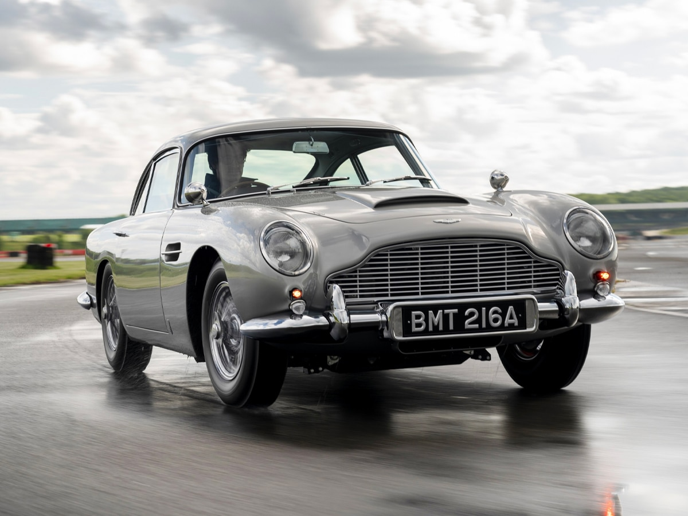
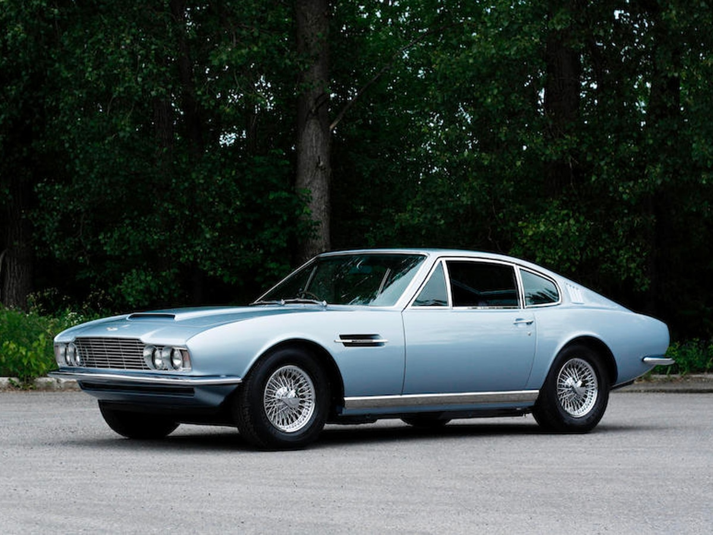
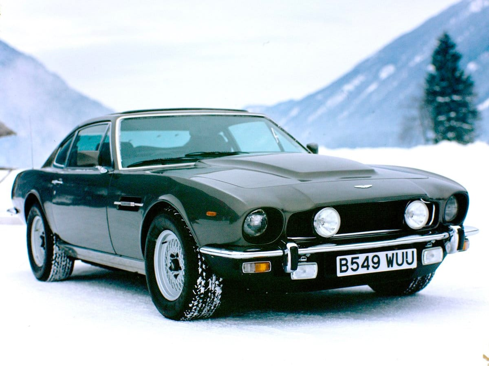
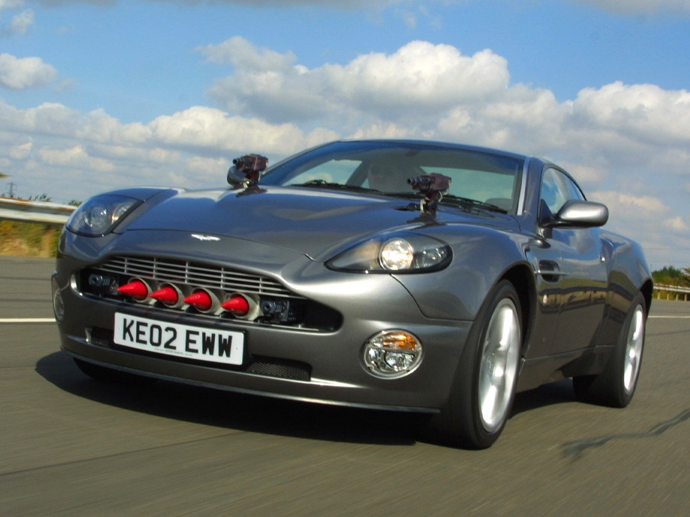
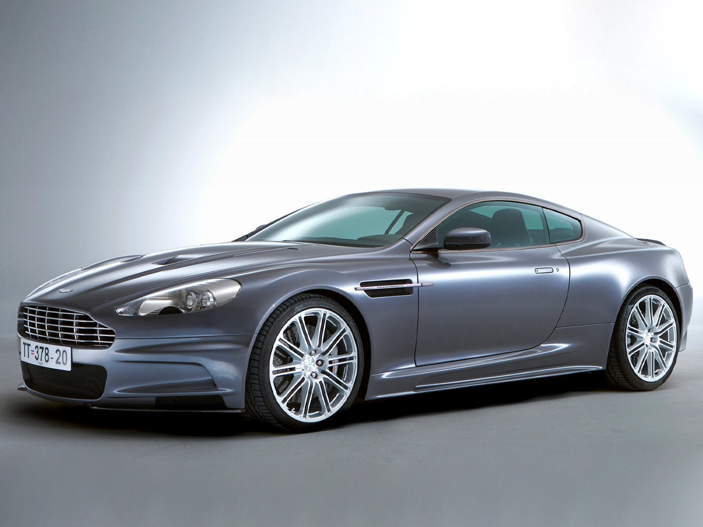
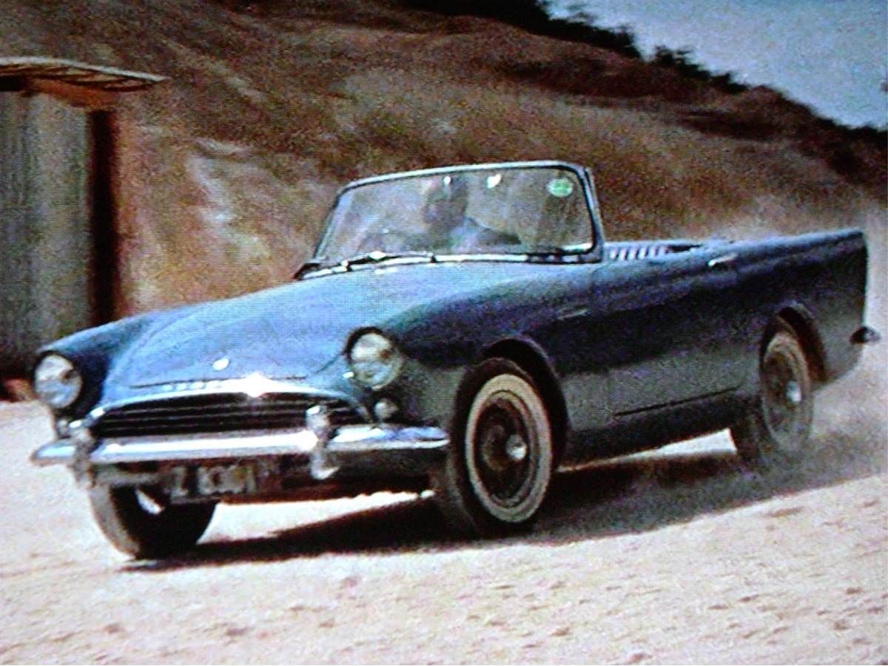
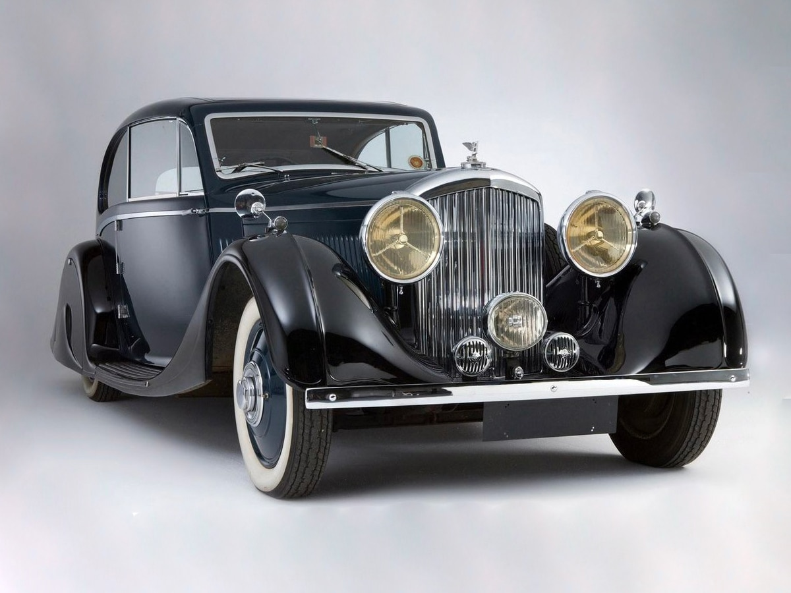
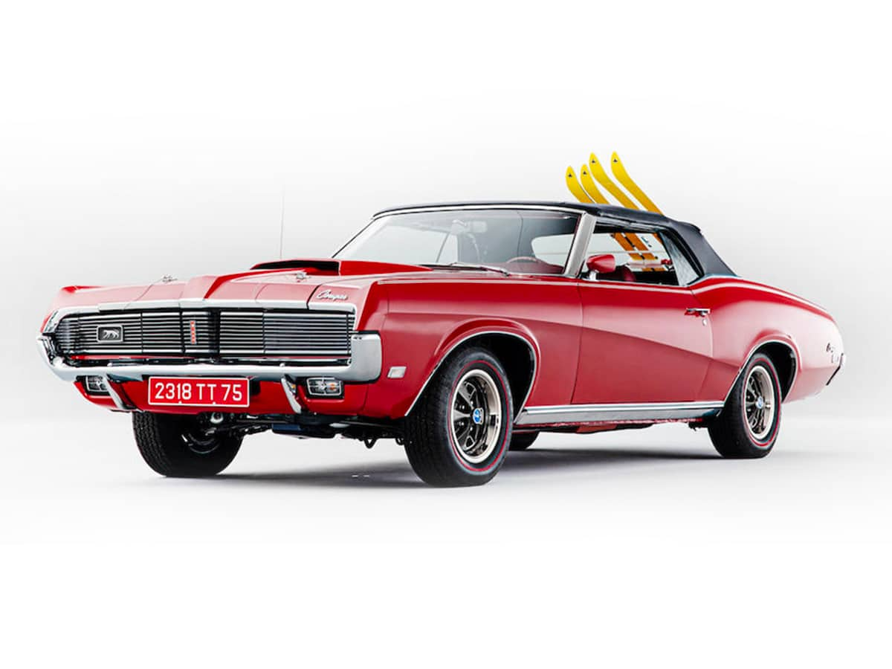
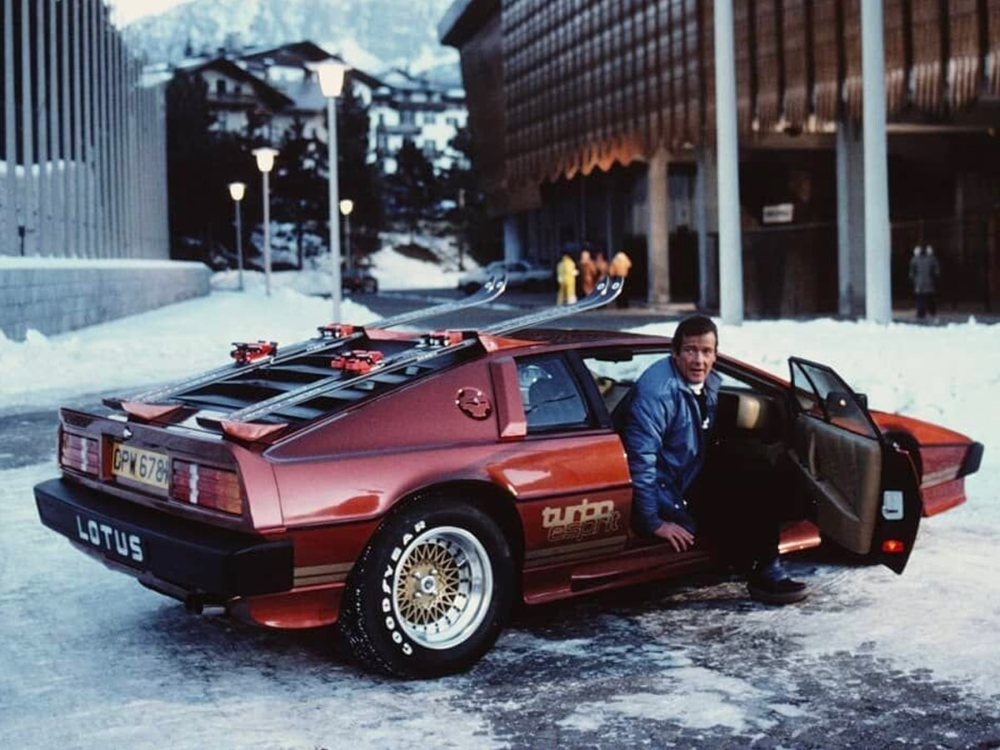
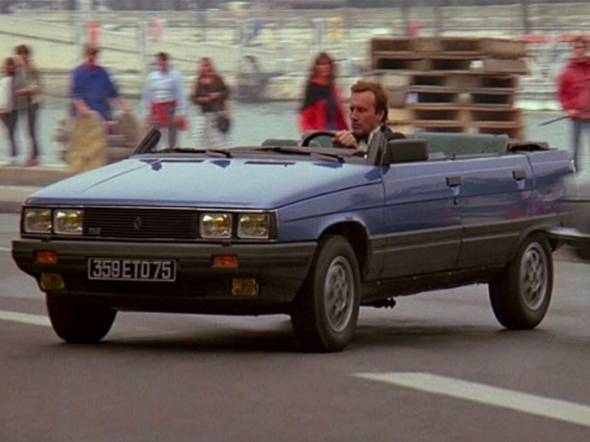

| Vichle | Image | Description |
|---|---|---|
1964 Aston Martin DB5 |
 | The 1964 Aston Martin DB5: Bond's timeless ride, embodying sleek sophistication, ingenious gadgets, and the epitome of spy style. |
1969 Aston Martin DBS |
 | A sleek and powerful marvel, gracing the screen as another iconic Bond chariot. With its charismatic design and potent performance, the DBS exemplifies the essence of 007's automotive elegance. |
1985 Aston Martin V8 Vantage Volante |
 | A convertible masterpiece that radiates luxury and speed. This Bond car captures the spirit of the '80s with its powerful V8 engine and timeless design, showcasing sophistication in every curve. |
2002 Aston Martin V12 Vanquish |
 | This sleek powerhouse, with its V12 engine and avant-garde design, takes the spotlight as 007's ride, seamlessly merging elegance with high-performance. |
2006 Aston Martin DBS V12 |
 | With its V12 engine and sophisticated design, the DBS V12 epitomizes the dynamic allure that accompanies James Bond on his thrilling missions. |
1961 Sunbeam Alpine Series II |
 | A classic beauty, etching its mark as one of James Bond's early iconic rides. This convertible masterpiece, with its charming design, reflects the timeless elegance of the 1960s and captures the spirit of Bond's adventurous pursuits. |
1935 Bentley Mark IV Drophead |
 | A vintage masterpiece, a symbol of luxury, and a distinguished choice for James Bond's timeless style. |
1969 Mercury Cougar XR-7 |
 | The Cougar XR-7, with its distinctive features and roaring engine, brings a touch of American muscle to 007's adventurous escapades. |
1981 Lotus Esprit Turbo |
 | A sleek and futuristic marvel, the Lotus Esprit Turbo is James Bond's dynamic companion, showcasing a blend of cutting-edge design and turbocharged performance. |
Renault 11 Taxi |
 | This practical yet unexpected ride showcases Bond's adaptability, navigating the streets with a touch of subtlety amidst more glamorous counterparts. |